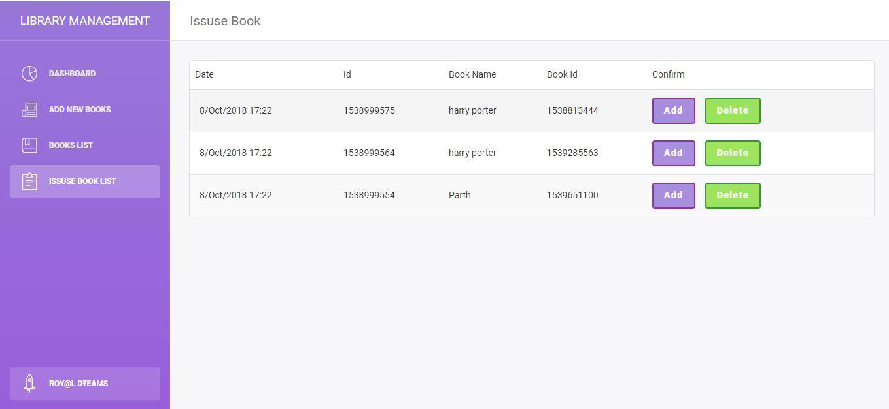

Achievements
DETAILS
NAME
AGE
LOCATION
DEGREE
PHONE
EMAIL
Shyam Khokhariya
21 Years
Surat,India
Computer Engineering (3rd Year)
9824544027
shyamkhokhariya@gmail.com
SCET-A-THON
Runner Up in the SCET-A-THON. It was the event organized by the college. The main objective of the program was to get the solution of the different problems faced by the society in the field of environment, education and health. We came up with the solution for the problem of different pollutants in the atmosphere. We tried to display the content of different gases in the atmosphere. We then performed the action based on the increase in the level of particular gas.
FAKE NEWS DETECTION
Fake News Detection is the Machine Learning Code which was developed by our tem of five students. It was done by us during the internship of Machine Learning and Artificial Intelligence. We got to know about many new things about it and finally we developed our machine learning tool to dectect if the news given by the user is real or fake.
Website For Robotic Library

We developed the website for the management of books in the library by the robot. The designing of robot is an ongoing process. The book need to be looked by any user through the app. If they find the book in the library they visit the library and ask the robot to bring it for him/her. After geting the instruction from our website placed in the library the robot moves and gets the book.